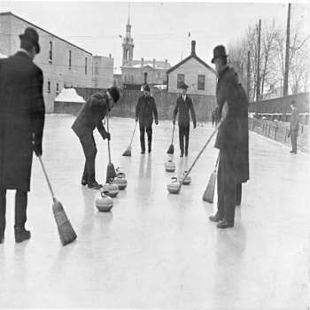
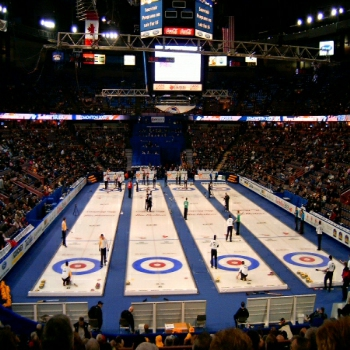

Hommes jouant au curling en Ontario en 1909
Des origines écossaises
Le curling, un des sports d’équipe les plus anciens du monde, voit le jour au 16e siècle en écosse où il est pratiqué en hiver sur les lacs et les étangs gelés. Les pierres les plus anciennes sont découvertes dans les régions écossaises de Sterling et de Perth et datent de 1511. Dans les années 1600, les pierres à poignées font leur première apparition.
La clé de l’évolution
Le premier club de curling est le Grand Caledonian Curling Club. Formé en écosse en 1838, il est rebaptisé Royal Caledonian Curling Club en 1843 et formule les premières règles officielles du sport. Le 20e siècle est marqué par la standardisation des pierres, le développement de la glissière de livraison et l’utilisation d’installations en intérieur qui facilitent la réfrigération de la glace.
Histoire olympique
Le curling hommes est intégré au programme olympique en 1924 lors des premiers Jeux Olympiques d’hiver à Chamonix. Il est ensuite abandonné, puis réintroduit comme sport de démonstration en 1932 à Lake Placid. Entre 1936 et 1992, le curling figure aux Jeux comme sport de démonstration : à Garmisch-Partenkirchen en 1936 et Innsbruck en 1964, sous le nom allemand de "Eisschiessen" ; en 1988 à Calgary et en 1992 à Albertville, avec aussi bien des épreuves masculines que féminines. C’est à Nagano en 1998 qu’il fait officiellement partie du programme olympique, avec des compétitions masculines et féminines.

Compétition de curling moderne
Site web réalisé par Vincent Lafargue, Alexandre Gublin, Jerome Massip et Mickael Frenot - BTS SIO1 2015-2016